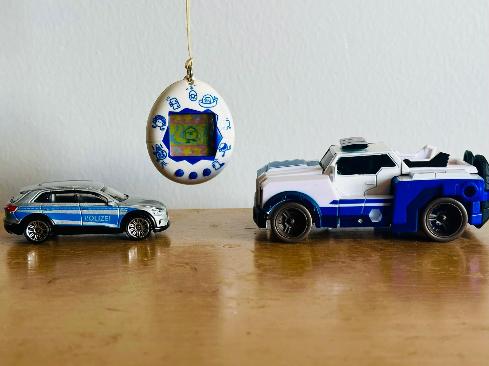

emjay • fish
Week 5: Woop Woop
That's the sound of da police. This week we're going with a police theme, because... why not? The bread tag is the notable exception, I should have picked a colour-matched one, whoops. Police cars go fast and get places on time, unlike the timing of this blog post, but shhhh (yes that was forced and bad). So uh, here we go!
Tamagotchi of the Week:
Original Tamagotchi (2nd Gen) — White with Pattern
Released February 1997
Name: Chip
So this was fun, my first time running an original 1996 Tamagotchi (or 1997 in the case of this specific shell). It was a bit spooky handling a piece of technology older than me, but it worked out... for the most part. I actually had to retire it after a few days because the buttons became too unresponsive — I'm assuming the conductive parts behind the buttons degraded a bit over the past almost 30 years, which is a shame. It was good while it lasted though! Unsurprisingly it plays just like the modern rereleases, but the transitions and menus are a lot slower, it's clear this thing was ahead of its time. I chose this shell for this week because it's kinda vaguely police colours? Maybe?
Transformer of the Week:
Legacy United Robots in Disguise 2015 Strongarm
Released 2023
Designed by Mark Maher & Koki Yamada
Strongarm! She's so cool. I haven't watched Robots in Disguise (2015) where she's from, but I'd like to one day (along with all the Transformers media help I have so much to catch up on), though unlike her on-screen counterpart this figure actually has a nose, which I think looks... less uncanny. She's a police car, which is neat, I've always been fascinated by emergency vehicles. My first experience with game modding was making personalised police car textures for GTA IV, so this is right up my alley. I've collected her mouldmates Elita-1 and Minerva because I like her transformation, especially the way her legs fold out, which means she's also great at squatting!
Hot Wheels of the Week:
2019 Audi e-tron — Silver
Released 2024
Designed by Abe Lugo
Toy number MB1299
Yes, it's another Matchbox car, deal with it. :) Audi e-tron is now a full range of electric cars, but it all started with this boi in 2019. Based on the Q8, it was appropriately renamed to the Audi Q8 e-tron once the range expanded. I don't know why but I really like the idea of Hot Wheels (or Matchbox I suppose) cars based on ordinary everyday vehicles, especially big blocky ones. I'm still bummed that I missed out on the Subaru Forester that was around earlier this year, since that was the car I learned to drive in. This car was part of a highway vehicle 5-pack, just a bunch of boring everyday cars to add to my collection, perfect! The police livery is interesting, Swiss police ordered 7 e-trons in 2019 to put into service, but from what I can tell they didn't use this livery, so it's... partially accurate. Close enough though.
Bread Tag of the Week:
Cyrtotergum albus — dark green
Manufactured by Kwik Lok
Manufacturer code A #0/1
So this is a neat little bread tag. Or not-so-little bread tag I suppose. I find these guys relatively often, but all of my bread tags come from recycling centres that need them sorted into colours, so I don't know what they're actually from. As the "albus" in the name might suggest, if you're familiar with latin, this species was first discovered in white, but in Australia it only seems to come in this lovely shade of dark green. It's also one of the few species from the family archignathidae present in Australia, that being bread tags with no "teeth" in their "mouth", you can see this one has a mostly circular opening. I really like the body shape of this one too, something about the rectangle with the added round bits at the top and bottom is just... nice :)
Trucksim Mod of the Week:
ETS2 Kuehne + Nagel Paint Job Pack
Released October 2019
This was another request, a company I'd never heard of since I'd never seen it on the roads here in Australia, but I'm really happy with how it turned out. Kuehne + Nagel's livery is relatively simple, but I like it! They use
both blue and white trailers as well for some added variety. It's also just a fun name to pronounce, makes me feel all fancy and European, koo-nuh nah-gle :) I guess that blue and white colour scheme also makes it
kinda fit into the police theme? Yeah, sure, why not.
You can grab it on Steam Workshop or
TruckyMods!
Soooo this blog post was supposed to release two weeks ago, and it was 80% ready to go, I just needed to take a few photos. Unfortunately I'm lazy so that didn't happen for a while. Does this even count as a weekly blog any more..?